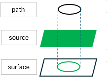
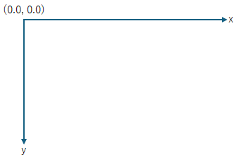
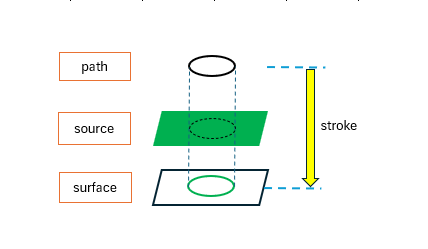
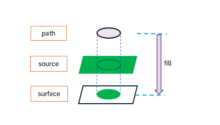
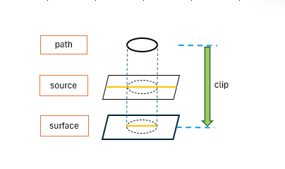
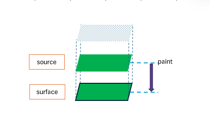

Cairoについて
(update:2025/3/8)
概 要
Cairoとは
cairoは、二次元グラフィックスライブラリーです。また、cairommは、gtkmm4の中でcairoの機能を呼び出しています。Gtk::DrawingArea上で線画や図形および文字を描くことができます。
描画モデル
cairoの描画モデルは、ソース(source)、パス(path)、サーフェース(surface)で構成されています。

ソース
ソースは、作成する画面のもとになるものです。色、画像、グラデーション、サーフェースを指定することができます。
パス
パスは、ペンで描いた時の軌跡に相当します。
サーフェース
サーフェースは、図形や文字を描く紙のようなものです。画像ファイル、pdfファイル、svgファイルを使用することができます。
コンテキスト
コンテキストは、ソースに色やグラデーションをセットしたり、パスを作成する他、サーフェースにパスを写すライブラリです。出力先のサーフェースをもとに作成します。
描画の手順
線や図形を描く手順は、
- 出力先に合わせてサーフェースを作成する。
- サーフェースをもとにコンテキストを作成する。
- ソースに色、画像、グラデーションをセットする。
- 線や図形を描画する(コンテキストでパスを作成する)。
- 出力先に表示する画像を送る(パスをサーフェースに写す)。
Cairoの座標系

Cairoの座標系は、画像の左上を原点( 0.0, 0.0 )として、x軸は右向きに正、y軸は下向きに正となります。座標は、x座標・y座標ともに実数形式となります。
基本的な描画スタイル
線画の書き込み(stroke)

- 出力先に合わせてサーフェースを作成する。
- サーフェースをもとにコンテキストを作成する。
- ソースに色、画像、グラデーションをセットする。
- 線や図形を描画する(コンテキストでパスを作成する)。
- 出力先に表示する画像を送る。
塗りつぶし(fill)

- 出力先に合わせてサーフェースを作成する。
- サーフェースをもとにコンテキストを作成する。
- ソースに色、画像、グラデーションをセットする。
- 線や図形を描画する(コンテキストでパスを作成する)。
- 出力先にパスの枠内のソースを表示。
クリッピング(clip)

- 出力先に合わせてサーフェースを作成する。
- サーフェースをもとにコンテキストを作成する。
- ソースに色、画像、グラデーションをセットする。
- 線や図形を描画する(コンテキストでパスを作成する)。
- 出力先にパスの枠内のソースを表示。
背景の着色(paint)

- 出力先に合わせてサーフェースを作成する。
- サーフェースをもとにコンテキストを作成する。
- ソースに色、画像、グラデーションをセットする。
- ソースを出力先に表示。
(補足)上記のうち1,2は、Gtk::DrawingAreaでは、ライブラリ側で自動的に作成されます。